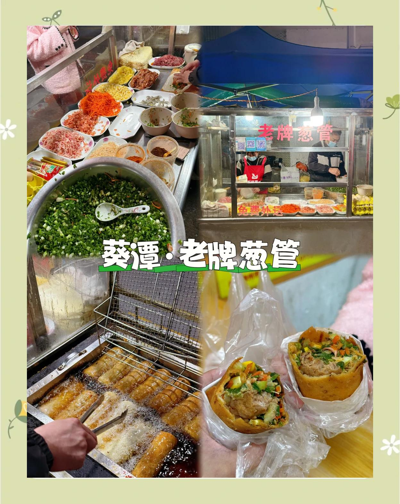
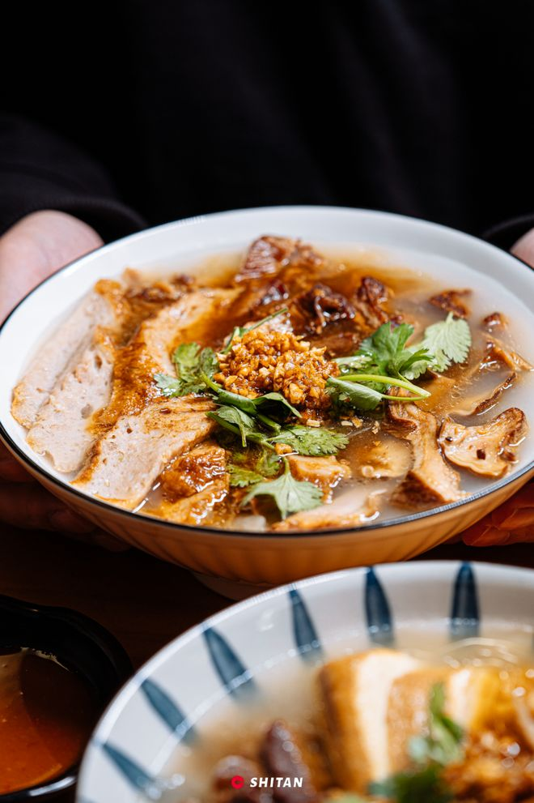
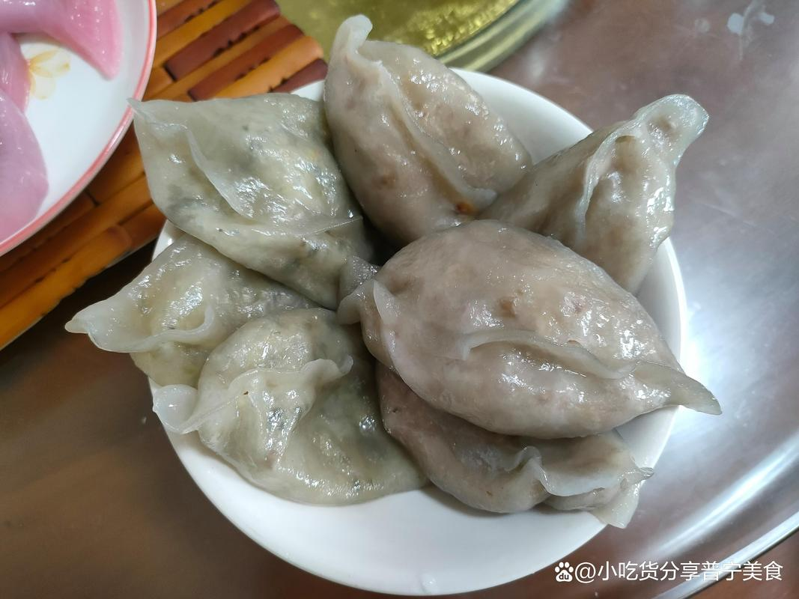

①葵潭葱管
—————————————————————————————————————————————————————————————————————

介绍
- 类别:小吃/美食
- 价格:5~10元
- 推荐指数: ⭐⭐⭐⭐⭐
②粿角
—————————————————————————————————————————————————————————————————————

介绍
在葵潭，吃粿角讲究“卤汁入味”与“配菜丰富”，形成了一套完整的饮食仪式： 灵魂卤汁：正宗的葵潭粿角卤汁通常不加过多复杂香料，仅以酱油为基础进行卤制。这种做法旨在保留食材的原味，突出肉香与酱香的纯粹结合。淋上卤汁后，粿角色泽油亮，味道浓郁。 丰富配菜：食客可根据个人喜好现场DIY添加配菜。常见的选择包括卤猪肚、猪粉肠、猪舌、护心肉、粿肉等。这些卤味食材新鲜现切，肉质鲜嫩有嚼劲，与滑嫩的粿角形成口感上的互补。 食用体验：上桌后需先搅拌均匀，让每一片粿角都裹满卤汁。入口时，先是粿角的爽滑弹牙，紧接着是卤肉的咸香醇厚，最后回味悠长。许多食客形容其“哧溜滑”、“越吃越有味道”。
- 类别:主食
- 价格:15~20元
- 推荐指数: ⭐⭐⭐⭐
③薯粉粿
—————————————————————————————————————————————————————————————————————

介绍
一、 核心特色与外观 葵潭薯粉粿最显著的特点在于其粿皮的制作。不同于普通米浆制成的粿品，薯粉粿主要选用优质的番薯粉（红薯淀粉）作为原料。经过特定的烫面工艺处理后，蒸制而成的粿皮呈现出半透明的晶莹剔透状，质地软滑细嫩，同时兼具极佳的柔韧性与弹性。 夹起一块薯粉粿，可见其外皮光亮，包裹着饱满的馅料。入口时，粿皮韧滑有嚼劲，不粘牙且清爽，与内部鲜香的馅料形成鲜明的口感对比，带来“外Q内鲜”的独特体验。
二、 馅料多样，包容万象 葵潭薯粉粿在馅料的选择上极具灵活性，遵循“万物皆可包”的原则，既保留了传统风味，又满足了不同食客的口味偏好。常见的馅料组合包括： 经典素馅：以包菜、韭菜、萝卜、南瓜等时令蔬菜为主，搭配蒜头、葱白、胡椒粉等调料提味，清新爽口。 海鲜风味：加入虾米、虾仁或干贝等海产品，赋予粿品浓郁的海洋鲜香，如“虾韭菜”、“虾菜脯”等组合。 荤素搭配：部分做法会加入切粒的熟猪肉、香菇丁等，增加油脂香气和口感层次，使味道更加醇厚。 无论选择何种馅料，关键在于食材的新鲜度与调味的平衡，确保馅料汁液丰富，咬开后鲜香四溢。
- 类别:小吃/美食
- 价格:15~20元
- 推荐指数: ⭐⭐⭐⭐⭐⭐